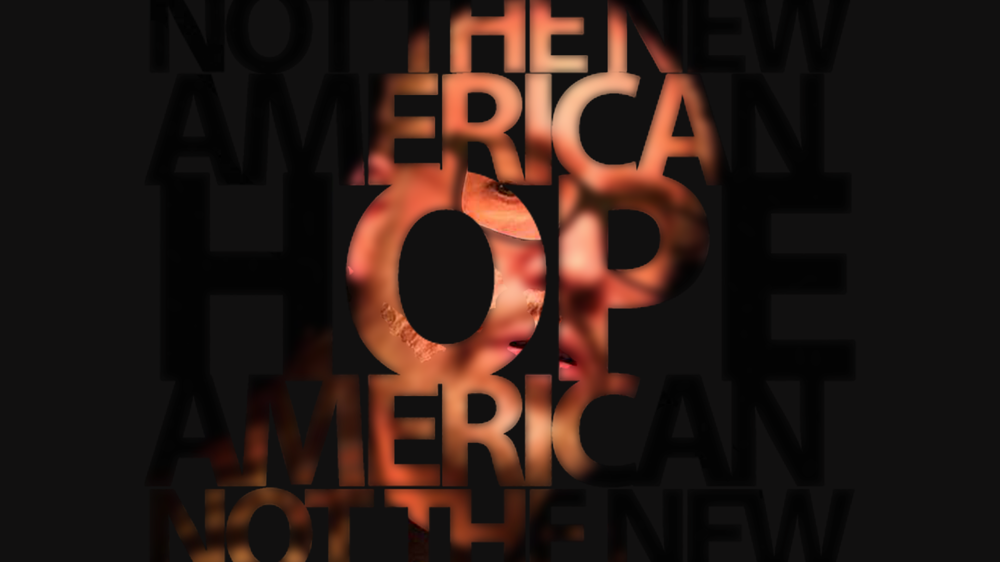

"Strange to have this as one of the few real lessons my father taught me..."
Greatest Hits & Proofs of Concept
Exploring the intersection of traditional poetry, digital literature, and experimental sound across three decades of creative practice.
30+
Years Creating
3
Art Forms
∞
Possibilities

POETRY
"He'd rather embrace this lonely disappointment..."
DIGITAL LITERATURE

MUSIC


About
I'm a creative technologist exploring the intersections between traditional literary forms and emerging digital media. My work spans poetry published in prestigious journals, experimental digital literature projects, and three decades of musical collaboration.
Whether I'm algorithmically remixing Shakespeare's sonnets, crafting prose poems about childhood memories, or laying down bass lines that keep bands on their toes, I'm drawn to projects that blur boundaries and challenge expectations.
creative_process.py
def create(inspiration):
if inspiration == "poetry":
return craft_with_precision()
elif inspiration == "code":
return experiment_with_algorithms()
else:
return play_bass_until_clarity()